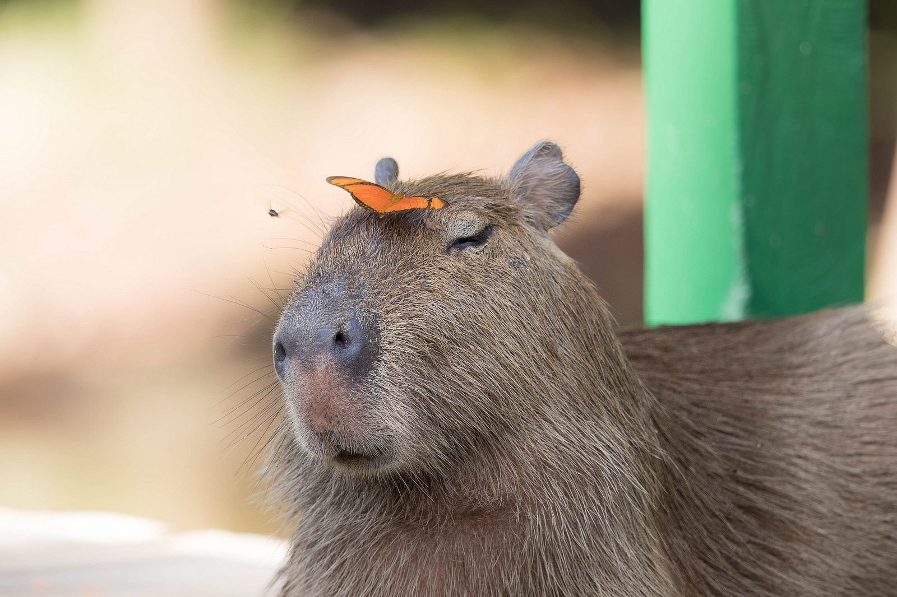
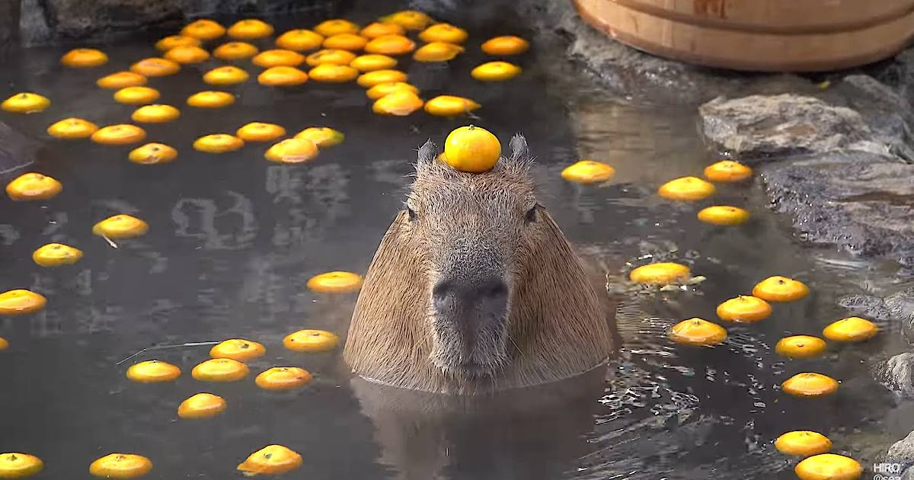

|
Капибара
Капибара или большая капибара (Hydrochoerus hydrochaeris) - гигантский морской грызун, обитающий в Южной Америке. Это самый крупный из ныне живущих грызунов[2], представитель рода Hydrochoerus. Единственным другим сохранившимся представителем является малая капибара (Hydrochoerus isthmius). Ее близкими родственниками являются морские свинки и морские свинки, и она более отдаленно связана с агути, шиншиллой и нутрией. Капибара обитает в саваннах и густых лесах, а также вблизи водоемов. Это очень социальный вид, и его можно встретить группами до 100 особей, но обычно они живут группами по 10-20 особей. На капибару охотятся ради ее мяса и шкуры, а также ради жира из толстой жирной шкуры.[3] Не считается угрожаемым видом.

|